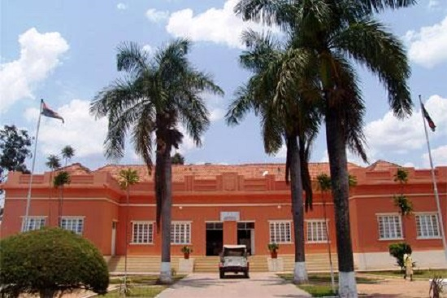
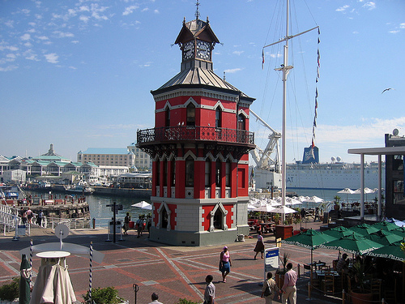
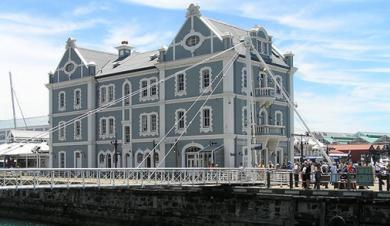
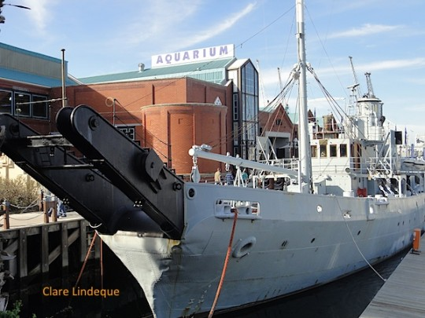

I would love to visit Cuito in Angola. One of my good friends stayed here for many years, and another friend was named after this town.
Spanish is a beautiful language and is spoken in many parts of the world, I would love to speak it well
| English | Spanish |
|---|---|
| Hello, how are you? | Ola, como estas? |
| How old are you? | Cuanto anos tienes? |
| Are you happy here? | Estas feliz aqui? |
| I am very hungry | Tengo mucho hambre |
The Clock Tower can tell the time and is a beautiful place for tourists to relax and enjoy life 
The old Union Castle is a reminder of Cape Town's colonial past 
The SAS is a classic warship that shows the Waterfront's past before the navy moved to Simon's Town 